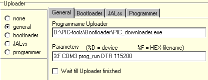
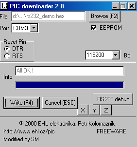
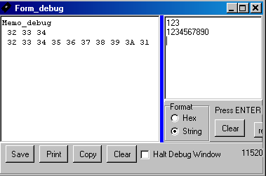
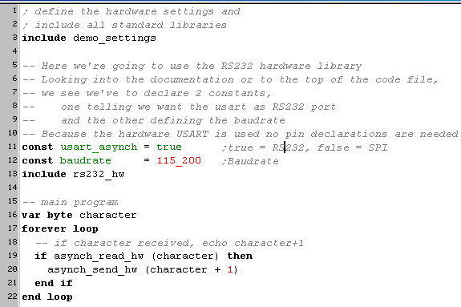

januari 2005
RS232 hardware communication
Introduction
If you used the same test setup as I used, i.e. Bootloader, in fact you already knows that serial communication is running ok at 19.2 kBaud. In this example we increase the speed to 115 kBaud, which should give no problems as long as the oscillator is running ok.
This is a very important piece of code, because it creates a quiet adequat debugging tool. I find it even so important that it will be inserted in the general initialisation library "demo_settings" used in all the following examples.
The demo program receives a character through the serial port, adds one to the value of that character and sends it back through the serial port.
Now If the bootloader settings are like this:

The bootloader - uploader will start like this

and after uploading, it will popup the debug window:
Now set the send format to "String" and type a few digits, followed by a Return.
As you can see in the picture below, the characters are echoed with an incremented ASCII-value, on the left in the picture below.
(character "1" has an hex value of 0x31)

JAL
JAL++

PICbsc
XCSB
Basic87x
todo ...